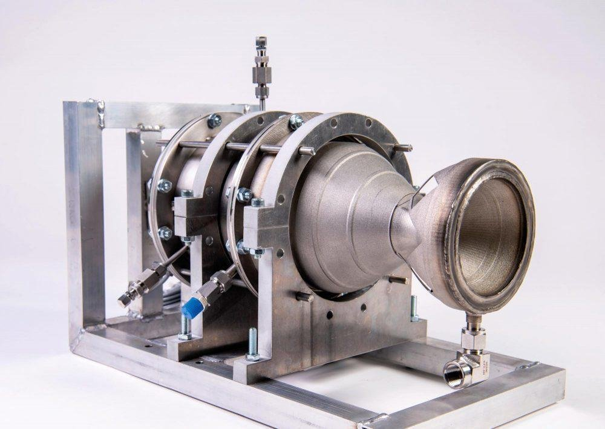

Sirius Birpropellant Rocket Engine:
This project was my fourth year group design project ("GDP"). The project is currently in its third year running as a GDP and so the development of the rocket engine prototype is in an advanced stage, although there are still many aspects that hadn't been finished by the previous teams, so it is our turn to take on them!. The ultimate goal of the project this year is to test-fire the rocket and analyse its performance.
Abstract:
Project Sirius is a student led project that aims to design and build a cost-effective, three stage rocket to launch small satellites into low Earth orbit from a UK based spaceport.
The current stage of the project involves the design, manufacture and testing of a 1.5kN regeneratively cooled 3D printed liquid fuel engine. The project aims to serve as a testbed to develop a new generation of “green” propellant rocket propulsion.
My current main responsibilities include the design of the oxidiser injectors, as well as the manufacture and testing of the catalyst.